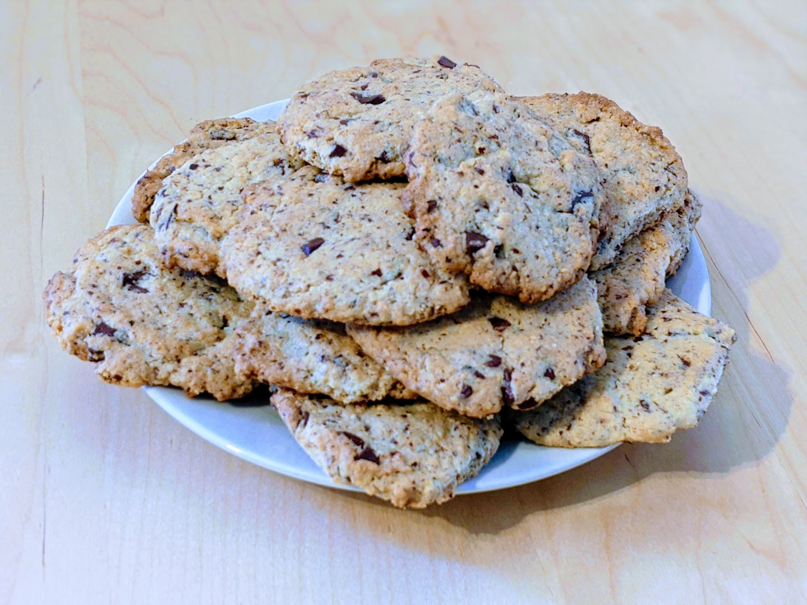

Cookies noisettes-chocolat

Pour une vingtaine de cookies (une douzaine si tu fais des cookies de gros sac) :
- 150g de farine
- 125g de sucre
- Un œuf
- 65g de poudre de noisettes
- 75g de beurre
- Une grosse pincée de levure chimique
- Un sachet de sucre vanillé
- Une petite pincée de sel
- 60g de chocolat en pépites
- Mélanger le beurre avec le sucre, le sucre vanillé et le sel dans un saladier.
- Rajouter l'œuf en continuant à mélanger.
- Dans un autre récipient, mélanger la farine, la poudre de noisettes et la levure, puis ajouter peu à peu (en continuant à mélanger) ce mélange au précédent.
- Faire préchauffer le four à 200°C (thermostat 6-7).
- Ajouter les pépites de chocolat et mélanger pour qu'elles soient à peu près bien réparties.
- Beurrer et fariner une plaque de cuisson.
- Répartir des petits tas de pâte sur la plaque, faire des formes de cookies et enfourner pour 10 minutes.
- Une fois la cuisson terminée, laisser reposer les cookies sur une grille, déguster tiède (ou conserver dans une boîte hermétique).
Retour à la liste des recettes